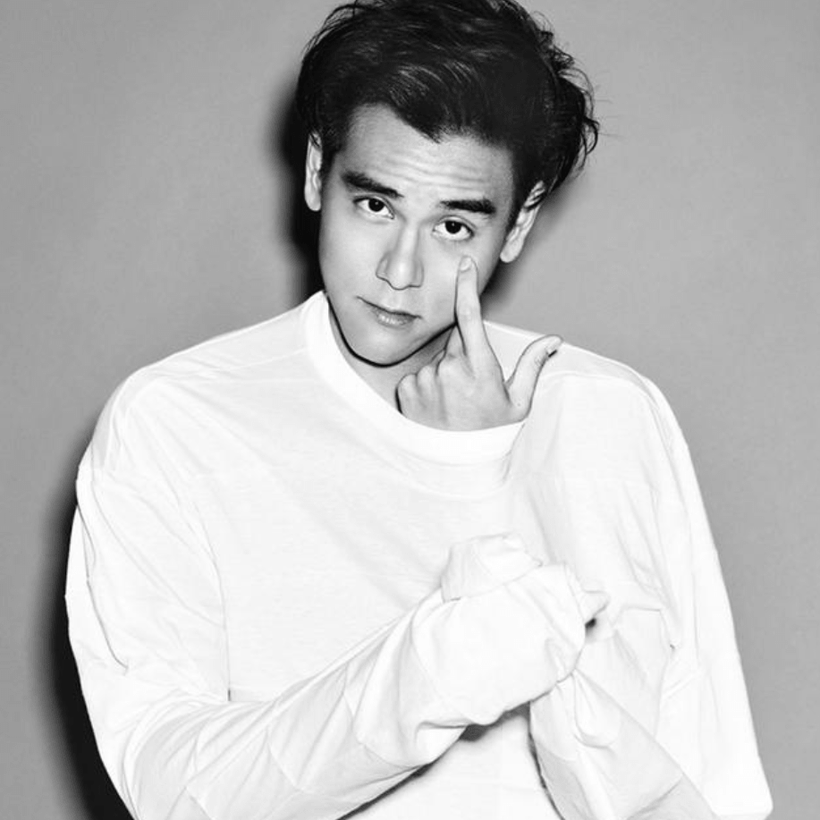

彭于晏
- 彭于晏（Eddie Peng Yu Yan，1982年3月24日－）
- 台湾澎湖县人，生于澎湖县，知名男演员。
- 2002年在演艺圈出道，偶像剧《爱情白皮书》是其出道作品。彭于晏在演艺圈的师父是香港影坛大哥大洪金宝。
经历
- 13岁时，随家人移民加拿大后，即进入加拿大英属哥伦比亚大学就读，主修经济学。
- 在大学二年级的暑假，因外婆过世，他回台奔丧，被导演邀请参加甄选而演出偶像剧《爱情白皮书》。
- 因此进入演艺圈，而休学专心拍片。彭于晏后来在一次专访中回忆说：“我抱持打工的心情去尝试，当时也没签任何合约就去拍戏的。”
写真

影视作品
- 2005 记录 邱云翔 张钧甯、阿Ben
- 2006 午夜照相馆 阿竹烧 李威、夏于乔
- 2007 六号出口 范达音 阮经天
- 泥巴色的纯白 唐旭川 官恩娜
- 2008 女人不坏 莫启彦 周迅、桂纶镁、张雨绮、冯德伦
- 爱的发声练习 阿良 徐熙媛、张孝全
- 2009 听说 黄天阔 陈意涵、陈妍希、林美秀、罗北安
- 2010 近在咫尺 赵大杰 郭采洁、罗北安、杨子珊、明道
- 恋人絮语 黎广生 谢安琪
- 2011 翻滚吧！阿信 林育信 柯宇纶、陈汉典
- 夏日乐悠悠 游乐乐 Angelababy
- 2012 爱LOVE 阿凯 舒淇、阮经天、赵又廷、赵薇、陈意涵、郭采洁
- 太极1从零开始 方子敬 袁晓超、Angelababy、英达、刘碧丽
- 寒战 李家俊 梁家辉、郭富城
- 太极2英雄崛起 方子敬 袁晓超、Angelababy
- 2013 激战 林思齐 张家辉、高捷、安志杰
- 分手合约 李行 白百何、吴佩慈、蒋劲夫
- 2014 黄飞鸿之英雄有梦 黄飞鸿 梁家辉、洪金宝、井柏然、王珞丹
- 匆匆那年 陈寻 倪妮、郑恺、魏晨、陈赫、张子萱、刘雅瑟
- 2015 12金鸭 彭于晏 吴君如
- 破风 仇铭 崔始源、王珞丹、窦骁、连凯、陈家乐、欧阳娜娜
- 剩者为王 马赛 舒淇
- 2016 奔爱 冯裕健 章子怡
- 特工爷爷 武警队长 洪金宝
- 长城 无影禁军 虎军将领 马特·达蒙、威廉·达佛、刘德华、张涵予、景甜、林更新、鹿晗
- 危城 马锋 刘青云、古天乐、江疏影、吴京
- 寒战II 李家俊 梁家辉、郭富城、张国柱、杨祐宁
- 湄公河行动 方新武 张涵予、卢惠光、吴嘉龙
- 2017 乘风破浪 徐正太 邓超、赵丽颖
- 明月几时有 刘锦进 周迅、霍建华、叶德娴、春夏
- 悟空传 孙悟空 余文乐、倪妮
- 2018 邪不压正 李天然 姜文、廖凡、周韵、许晴
- 2019 深夜食堂 健身教练 梁家辉
- 2020 紧急救援 高谦 辛芷蕾、王彦霖、蓝盈莹、王雨甜
- 2021 第一炉香 乔琪乔 马思纯、俞飞鸿、张钧甯、范伟、梁洛施、秦沛、张佳宁、白冰
- 热带往事 张艾嘉
- 世外桃源 马思纯、王俊凯